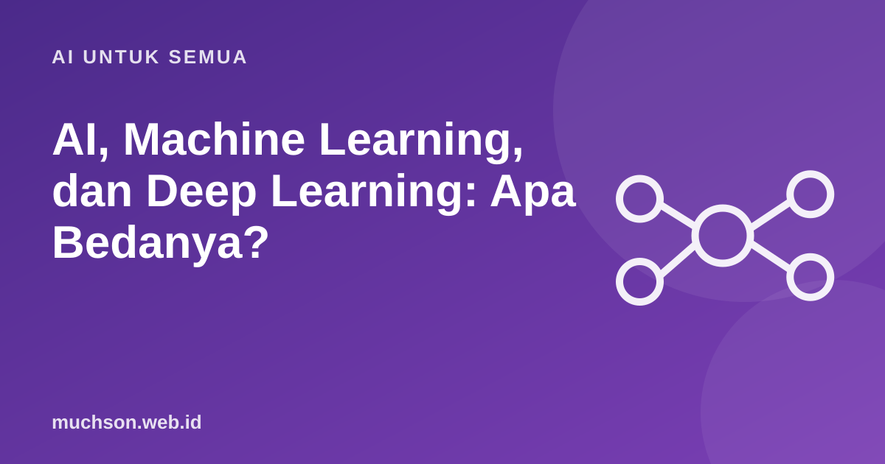

Beranda › Artikel › AI untuk Semua
AI untuk SemuaAI, Machine Learning, dan Deep Learning: Apa Bedanya?
Istilah AI, machine learning, deep learning, dan AI generatif sering dipakai bergantian, bahkan di berita dan iklan. Padahal keempatnya punya hubungan yang jelas, seperti boneka matryoshka yang saling memuat. Memahaminya membantu Anda menilai klaim produk dan berita teknologi dengan lebih jernih.

Hubungannya dalam satu gambar
AI: payung besarnya
Kecerdasan buatan (AI) adalah bidang luas yang bertujuan membuat mesin melakukan tugas yang biasanya membutuhkan kecerdasan manusia: mengenali gambar, memahami bahasa, bermain catur, mengambil keputusan. Tidak semua AI belajar dari data. Program catur lama, misalnya, bekerja dengan aturan dan pencarian langkah yang ditulis manusia. Itu tetap disebut AI.
Machine learning: belajar dari contoh
Machine learning adalah cara membuat AI dengan memberi mesin banyak contoh, lalu membiarkannya menemukan pola sendiri. Daripada menulis aturan "email yang mengandung kata X adalah spam", kita memberi ribuan email berlabel spam dan bukan spam, lalu algoritma mempelajari ciri-cirinya.
| Jenis machine learning | Cara belajar | Contoh |
|---|---|---|
| Supervised (dengan label) | Belajar dari contoh yang sudah diberi jawaban | Filter spam, prediksi harga rumah |
| Unsupervised (tanpa label) | Mencari kelompok atau pola sendiri | Mengelompokkan pelanggan berdasarkan kebiasaan belanja |
| Reinforcement (penguatan) | Belajar dari hadiah dan hukuman setelah mencoba | AI bermain game, robot belajar berjalan |
Deep learning: jaringan saraf berlapis
Deep learning adalah bagian dari machine learning yang memakai jaringan saraf tiruan dengan banyak lapisan. Setiap lapisan mempelajari ciri yang makin kompleks. Pada pengenalan wajah, lapisan awal mengenali garis dan tepi, lapisan tengah mengenali mata dan hidung, lapisan akhir mengenali wajah utuh.
Deep learning melonjak populer sekitar 2012, ketika jaringan saraf bernama AlexNet memenangkan kompetisi pengenalan gambar ImageNet dengan selisih besar. Kombinasi data yang melimpah dan kartu grafis (GPU) yang kuat membuat pendekatan ini praktis.
Deep learning butuh data dan daya komputasi yang jauh lebih besar daripada machine learning klasik. Untuk banyak masalah bisnis dengan data tabel sederhana, metode machine learning klasik masih sering lebih tepat dan lebih mudah dijelaskan.
AI generatif: membuat konten baru
AI generatif adalah model yang menghasilkan konten baru: teks (ChatGPT, Claude, Gemini), gambar, musik, atau video. Model bahasa besar (LLM) dilatih menebak kata berikutnya dari teks dalam jumlah sangat besar, lalu disempurnakan agar bisa mengikuti instruksi. Banyak model ini dibangun di atas arsitektur Transformer, yang diperkenalkan dalam makalah "Attention Is All You Need" (2017).
Contoh di sekitar Anda
| Contoh | Termasuk | Kenapa |
|---|---|---|
| Filter spam email | Machine learning | Belajar dari contoh email berlabel |
| Rekomendasi video | Machine learning (sering deep learning) | Belajar dari riwayat tontonan jutaan orang |
| Buka kunci HP dengan wajah | Deep learning | Jaringan saraf mengenali ciri wajah |
| Chatbot yang menulis email | AI generatif | Membuat teks baru |
| Lawan komputer di game papan klasik | AI (belum tentu machine learning) | Bisa memakai aturan dan pencarian langkah |
Uji pemahaman
Memahami lapisan-lapisan ini membantu Anda menilai klaim produk. "Didukung AI" bisa berarti apa saja, dari aturan sederhana sampai model deep learning raksasa. Pertanyaan yang lebih berguna: data apa yang dipakai, seberapa akurat, dan apa risikonya bila salah?
Tanya jawab
Apa beda AI dan machine learning?
Apa beda machine learning dan deep learning?
ChatGPT termasuk jenis apa?
Apakah semua AI belajar dari data?
Sumber dan bacaan lanjut
- Google: Machine Learning Crash Course
- Vaswani dkk. (2017). Attention Is All You Need
- Elements of AI (University of Helsinki)
- Apa itu AI? (artikel terkait)